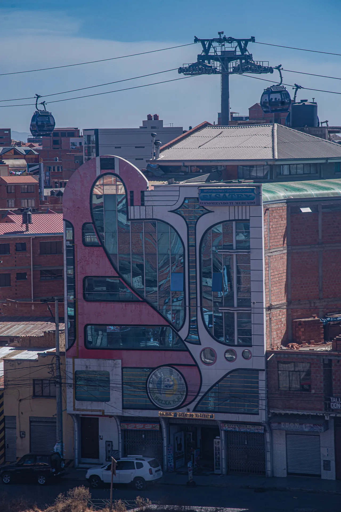

La casa está arriba; abajo se alquila, se vende y se celebra. Esa distribución explica más sobre los edificios llamados cholets que cualquier disputa rápida entre belleza y mal gusto. En muchas de estas construcciones de El Alto, la planta baja se abre al comercio; sobre ella aparece un salón de eventos; los pisos siguientes pueden contener departamentos, y la vivienda de los propietarios corona el conjunto. El edificio reúne trabajo, renta, reunión y residencia en un mismo lote. Su fachada policroma hace visible esa inversión, pero el color no reemplaza al programa: acompaña una manera de utilizar el suelo. [1][2]
Las dos fotografías que acompañan esta lectura muestran exteriores de cholets en El Alto. Sus fichas identifican a los fotógrafos, pero no a quienes diseñaron o encargaron los edificios. No podemos atribuirlos a Freddy Mamani ni deducir por la imagen cómo se usan todos sus pisos. Esa limitación importa. Mamani es el autor más difundido de la arquitectura neoandina, pero no cada fachada de vidrio y geometría que se le parece es una obra suya. Para comprender la tipología conviene mirar juntos el testimonio del constructor, el uso descrito por propietarios y usuarios, y los estudios de la ciudad. [1][3]


Una sección económica
En una entrevista publicada en 2025, Freddy Mamani explica a Samuel Hilari cómo entiende la distribución de sus edificios: comercio en la planta baja, salón de eventos en el centro y vivienda en la parte alta. Lo presenta como una respuesta a clientes vinculados con el comercio, la gastronomía, el transporte y la minería. No se trata únicamente de acumular usos. Cada nivel tiene una relación distinta con la calle y con la economía familiar: el local necesita contacto inmediato con los peatones; el salón requiere otra escala de acceso y reunión; los departamentos pueden producir alquiler; la vivienda superior ocupa el lugar de mayor privacidad. [1]
En otra conversación, Mamani describe el inmueble como una inversión capaz de seguir produciendo ingresos para sus dueños. Los locales se alquilan, el salón recibe celebraciones y algunos departamentos pueden reservarse para hijos o arrendarse. Esta explicación desplaza la atención desde la fachada hacia la sección del edificio. Lo que desde la acera se percibe como una sola figura es, en realidad, una negociación vertical entre actividades. La arquitectura adquiere valor cuando mantiene abiertas esas posibilidades y permite que cambien con la vida de la familia. La afirmación procede de la descripción del arquitecto; no acredita que cada cholet concreto funcione hoy del mismo modo. [2]
La cubierta de la casa superior, visible en la segunda fotografía, ayuda a entender el nombre popular: chalet sobre un edificio de varios pisos. Sin embargo, «cholet» no es una categoría neutra. Los textos académicos registran su origen como combinación de chalet y cholo, con una carga despectiva que no desaparece porque la palabra se use de forma corriente. Mamani suele preferir «nueva arquitectura andina». En esta lectura usamos cholet para designar una tipología reconocible, sin convertir el término en la única definición de la arquitectura alteña ni suponer que todos los propietarios se identifican con él. [3][4]
Preguntar por el uso obliga también a preguntarse quién puede financiar la obra. La investigación etnográfica de Andrea Mejía Contreras analiza estos edificios como formas de distinción de sectores económicamente emergentes; no como la vivienda representativa de toda la población aimara. El Alto no cabe en una fachada. Los cholets dan presencia pública a algunos comerciantes y familias, mientras que otras experiencias urbanas, menos vistosas o menos rentables, permanecen fuera del encuadre. Reconocer la desigualdad interna no reduce el interés arquitectónico del fenómeno: permite describirlo con una escala social más exacta. [3]
En la planta baja ocurre una decisión de diseño aparentemente simple: hacer que el edificio participe en la vida comercial. Mamani recuerda que su primer cliente quería una construcción singular y, al mismo tiempo, una fuente de renta para la vejez. Según su relato, el cliente viajaba a China y podía traer materiales. Ese encargo combina deseo de representación, comercio transnacional y cálculo económico. No conocemos aquí los planos ni las cuentas de esa obra; sí conocemos la pregunta que el arquitecto dice haber recibido. Una fachada extraordinaria y una inversión pragmática nacieron juntas, no en etapas separadas. [2]
El salón de eventos introduce una medida que el comercio no necesita: el espacio para reunirse. Mamani sitúa allí actividades festivas y culturales. La investigación sobre los cholets confirma que el salón es una parte central de su organización funcional, aunque su tamaño, decoración y régimen de alquiler varían. Ver una fotografía de la fachada no permite reconstruir la acústica, la circulación, el aforo o las condiciones de trabajo durante una celebración. Un análisis completo requeriría entrar, observar varios usos y hablar con quienes montan, limpian, administran y disfrutan esos salones. La ausencia de ese trabajo de campo en RUMMOR es una frontera de esta lectura, no una licencia para inventar escenas. [1][3]
También hay una pregunta urbana en esa sección. Si un edificio reúne venta, fiesta y vivienda, no termina en su lindero: trae proveedores, clientes, invitados, música, transporte y horarios distintos a la calle. La mezcla puede animar un tramo comercial y también producir conflictos por ruido, movilidad o mantenimiento. Las fuentes revisadas no miden esos efectos para los dos edificios fotografiados. Por eso es mejor formular la cuestión que presentar un balance sin datos. La tipología permite investigar cómo una economía de escala doméstica se vuelve visible en el espacio compartido, y qué infraestructura pública necesita alrededor para funcionar bien.
La organización vertical tampoco debe confundirse con una fórmula repetida sin negociación. Mamani menciona canchas y juegos infantiles junto a los salones en algunas obras; Mejía Contreras investiga diferencias de uso y valoración entre edificios. La pregunta más productiva para una visita sería seguir un día completo: cuándo abre el comercio, por dónde entran los invitados, dónde se cargan mercancías, qué accesos comparten los residentes y quién controla las transiciones. Un plano de plantas y secciones permitiría contrastar esas respuestas. Sin él, solo podemos describir el esquema general documentado y evitar afirmaciones sobre circulación o seguridad de una obra específica. [2][3]
Color con autor y con historia
El color suele ser la primera explicación y, a veces, la más débil. Decir que un edificio es «andino» porque usa magenta, verde o amarillo reduce una práctica de diseño a una paleta. Mamani habla de otra cosa en sus entrevistas: quería introducir referencias a las formas de Tiwanaku y a los textiles que conocía, y ofrecer a sus clientes una arquitectura en la que pudieran reconocerse. Esa declaración permite atribuirle una intención concreta. No convierte cada triángulo de cada fachada en una transcripción comprobada de un símbolo ancestral. Entre una referencia, una invención y una lectura posterior hay diferencias que el ensayo debe conservar. [1][2]
Las fotografías muestran planos de color, vidrios reflectantes y una composición geométrica que organiza la vista desde lejos. No muestran la secuencia de decisiones del diseñador, el catálogo del fabricante ni la participación del propietario. El material tiene aquí un papel activo: el brillo del vidrio cambia con la luz y con la posición de quien pasa; las juntas de los paneles segmentan superficies amplias; los marcos hacen que algunas líneas continúen y otras se interrumpan. Esa observación describe lo visible, sin afirmar que una superficie específica sea de determinado compuesto cuando la ficha fotográfica no lo certifica.
Mamani distingue entre obra gruesa y acabados. En una entrevista identifica ladrillo, hormigón y viguetas para la primera; para la segunda menciona yeso local, cerámicas y porcelanatos de procedencias diversas. Su descripción impide imaginar el cholet como un objeto hecho únicamente de vidrio o policarbonato. La fachada es una capa de una construcción más compleja. También impide la oposición fácil entre tradición local y material importado: el proyecto articula técnicas, mercancías y preferencias que circulan por rutas diferentes. La relación exacta entre esos materiales debe comprobarse edificio por edificio. [2]
El investigador alteño Guido Jesús Alejo Mamani amplía todavía más el campo. En un trabajo basado en recorridos de 2019 y 2020 distingue cinco variantes estéticas en la arquitectura de automodernización popular: geométrica, ecléctica historicista, andina, futurista transformer y minimalismo policromo. Su clasificación es una herramienta de análisis, no una lista de marcas comerciales. Sirve para corregir la idea de que El Alto tiene un único lenguaje exuberante creado por un solo autor. En los tramos estudiados, el minimalismo policromo aparece incluso con mucha fuerza. La ciudad combina referencias, simplificaciones y cambios de preferencia que una selección de fachadas famosas no revela. [4]
Ese dato altera la lectura de las dos imágenes. Podemos reconocer elementos de una familia visual, pero no usar dos fotografías para deducir la proporción de estilos de toda la ciudad. Tampoco corresponde poner la obra de Mamani como origen universal de cada variante. Alejo Mamani sitúa estas construcciones dentro de migraciones, acumulación económica, aprendizajes de albañiles y apropiaciones de materiales; añade antecedentes formales que exceden la trayectoria de un arquitecto. La firma tiene valor, pero la ciudad no es su monografía. [4]
Los números de su recorrido ayudan a medir la distancia entre imagen viral y paisaje construido. En las vías estudiadas del sector norte contó 59 casos de minimalismo policromo y 38 de la variante andina; en el sector sur registró 36 y 38, respectivamente. No son porcentajes de toda El Alto: corresponden a tramos elegidos y a fechas de 2019. Su utilidad está en mostrar que incluso dentro de una selección de avenidas importantes, las formas menos difundidas por la prensa tienen una presencia comparable o mayor. Una portada que solo muestra edificios espectaculares puede hacer creer que está describiendo una ciudad entera cuando en realidad está editando una muestra. [4]
El análisis del color puede hacerse con más precisión que mediante adjetivos. ¿Qué superficie ocupa cada tono? ¿Dónde se concentra el contraste? ¿Cómo se ordenan las ventanas respecto a los paños opacos? ¿Se mantiene una misma figura entre los pisos comerciales y los residenciales? ¿Qué ocurre de noche cuando el interior se ilumina? Las fotografías disponibles responden solo una parte de estas preguntas. Formularlas deja ver que la fachada no es un exceso sin reglas: tiene escala, repetición, interrupciones y jerarquías. La evaluación de si esas decisiones funcionan exige observar un edificio concreto y considerar desde dónde se mira.
La primera imagen, tomada según su ficha en 2024, acerca una fachada al espectador y deja ver sus planos reflectantes. La segunda, registrada en El Alto en 2014, permite reconocer el remate de vivienda sobre la masa inferior. Juntas ofrecen dos operaciones de lectura: una frontal, centrada en la superficie; otra, más atenta a la sección sugerida por la silueta. Ninguna sustituye un plano. Son documentos visuales con autores, fechas y licencias distintos, y conviene tratarlos como tales. Su valor editorial está en abrir preguntas observables, no en decorar una tesis que ya estaba escrita.


La distancia de una década entre las dos tomas no demuestra por sí sola una evolución estilística. Cambian el edificio, el fotógrafo, el punto de vista y las condiciones de luz. Para hablar de transformación harían falta una serie fechada de obras comparables, datos de autoría y alguna explicación de los cambios en materiales o encargos. La cautela puede parecer poco vistosa al lado de una fachada brillante, pero es una forma de respeto por la ciudad: evita convertir una coincidencia visual en una historia inevitable. La fotografía aporta presencia y detalle; el tiempo histórico exige otros documentos.
Quién mira desde fuera
Las objeciones al cholet han sido parte de su recepción. Mamani recuerda críticas locales a la prioridad que algunos lectores concedían a la fachada, mientras que el interés internacional muchas veces ha resaltado su apariencia espectacular. La etnografía de Mejía Contreras muestra que ambas reacciones pueden simplificar el objeto: una lo excluye del campo de la arquitectura legítima; la otra lo aplaude como rareza colorida sin entender a sus propietarios, usos y disputas de valor. El problema editorial no se resuelve eligiendo un bando antes de mirar. Hay que preguntar qué evalúa cada juicio y qué deja fuera. [2][3]
Una fotografía de fachada circula con facilidad: cabe en una pantalla, se comparte, produce reconocimiento inmediato. Un contrato de alquiler, la organización de una fiesta o las decisiones sobre mantenimiento no circulan igual. Esa asimetría explica por qué una arquitectura de programa mixto se ha convertido en ocasiones en una imagen casi autónoma. El diseño editorial puede repetir el recorte o corregirlo. RUMMOR elige mostrar la fachada y, en el mismo movimiento, indicar lo que la foto no puede contar. La legibilidad de la imagen no autoriza a simplificar la vida del edificio.
Mejía Contreras estudió la circulación de los cholets en espacios físicos y digitales mediante entrevistas y observación. Su pregunta por la legitimidad arquitectónica permite ver una paradoja: aquello que se celebra en el exterior como innovación puede ser discutido localmente como una forma impropia, y la aprobación exterior puede convertir la diferencia en mercancía visual. No se desprende de esto que todos los críticos locales sean racistas ni que cada visitante extranjero mire con exotismo. Sí se desprende la necesidad de identificar quién habla, desde dónde y con qué evidencia. [3]
Mamani mismo no presenta su trabajo como una oposición simple a todo lo moderno. Cuenta que el primer cliente podía traer materiales de China y que la renta futura era parte del encargo. Su arquitectura afirma referencias culturales propias utilizando técnicas y mercados contemporáneos. Alejo Mamani denomina a ese proceso «automodernización popular»: una adaptación pragmática que no necesita negar la tradición para usar recursos actuales. El término pertenece al investigador y ayuda a leer el proceso; no debe transformarse en una etiqueta que todos los propietarios aceptarían. [2][4]
En la entrevista realizada por Hilari, Mamani describe El Alto primero como una ciudad de adobe, luego de ladrillo y después de color. Es su manera de ordenar cambios que él mismo presenció y en los que participó, no una periodización exhaustiva de todas las calles. La secuencia resulta útil porque incluye materiales antes que estilos: disponibilidad de ladrillo, crecimiento en altura, llegada de otros acabados. También recuerda que las fases coexisten; no desaparecen todas las casas de tierra cuando aparecen fachadas nuevas. El color modifica la imagen pública de ciertos edificios, pero sigue apoyado en una historia constructiva que comienza bastante antes de él. [1]
Tampoco conviene convertir el edificio en un símbolo automático de emancipación colectiva. Una obra puede hacer visible el éxito de un grupo históricamente subestimado y, al mismo tiempo, expresar nuevas diferencias de capital dentro de la propia ciudad. La presencia de locales en la calle no significa que el suelo sea público; el salón no es una plaza aunque reciba reuniones numerosas. La apertura visual, la propiedad privada y la actividad económica se combinan de modos que requieren descripción, no una moraleja. Esta tensión hace más interesante al cholet que su representación como triunfo total o como extravagancia sin fundamento. [3]
Hay otra cautela en la palabra «identidad». Mamani explica que sus clientes buscaban una arquitectura que respondiera a sus prácticas y referencias. Es una afirmación situada. No existe un único modo de ser aimara urbano ni un deber de construir con ciertos colores. La propia diversidad formal registrada por Alejo Mamani contradice una equivalencia fija entre etnicidad y fachada. El encargo, la disponibilidad de materiales, la competencia entre propietarios, el aprendizaje técnico y la moda pueden intervenir en cada obra. Llamarla «identitaria» sin seguir esas decisiones dejaría el trabajo real fuera del relato. [1][4]
El alto perfil de Mamani tampoco vuelve anónimos a los demás. Propietarios deciden inversiones y programas; albañiles y especialistas materializan geometrías; usuarios negocian con el edificio una vez abierto. Los cuatro estudios consultados prestan distintas voces a ese proceso, pero nuestra selección de imágenes no identifica a las personas que construyeron los dos inmuebles fotografiados. En lugar de atribuirles una intención imaginada, esta lectura deja una pregunta para una investigación posterior: cómo se distribuye la autoría entre quien encarga, proyecta, fabrica, decora, financia y mantiene.
La entrevista de 2025 introduce además un límite menos fotografiable. Mamani habla de la falta de planificación urbana futura y de necesidades básicas de El Alto. La distinción es importante: un edificio capaz de expresar inversión privada no reemplaza calles, equipamientos ni servicios. Su éxito visual no debe leerse como prueba de que la ciudad haya resuelto sus problemas colectivos. Si algo vuelve fértil la discusión arquitectónica es precisamente la coexistencia de inventiva privada, movilidad social y necesidades públicas persistentes. [1]
Para una siguiente entrega editorial, el método está a la vista. Elegir un edificio identificado; conseguir planos o medir sus espacios con permiso; entrevistar al propietario, al proyectista, a trabajadores y usuarios; registrar un día sin evento y otro con celebración; comparar ingresos esperados con usos efectivos cuando sus responsables quieran compartir esos datos. Solo entonces podríamos hablar de cómo una fachada, un salón y una vivienda producen relaciones concretas. Mientras tanto, la crítica más honesta consiste en precisar lo que las fuentes permiten ver y no atribuir a una fotografía los testimonios que no contiene.
La nave del título, entonces, no es una fantasía que cayó sobre el altiplano. Es una construcción que concentra actividades, dinero, deseos de reconocimiento y trabajo especializado. Su vidrio devuelve la luz; sus plantas distribuyen usos; su imagen circula lejos de las calles donde se encuentra. En vez de decidir si nos gusta, podemos preguntar si sabemos describirla: quién la hizo, para quién funciona, qué permite alquilar, cómo reúne gente y qué parte de El Alto permanece fuera del encuadre. Esa lectura no agota el edificio. Le devuelve espesor a una fachada que la mirada apresurada había vuelto plana.
Fuentes.
- Samuel Hilari, «Entrevista con el arquitecto Freddy Mamani Silvestre», Bolivian Studies Journal, vol. 31, 2025. Entrevista realizada en junio de 2023.
- Fredy Massad, «Entrevista a Freddy Mamani», ARQA, 2020.
- Andrea Mejía Contreras, «Cholets: disputas arquitectónicas y espacios de poder en El Alto, Bolivia», Limaq, n.º 16, 2025; investigación con trabajo de campo entre 2018 y 2020.
- Guido Jesús Alejo Mamani, «El Alto: la reconfiguración de los imaginarios a través de la estética», 2021; estudio de campo realizado en 2019 y 2020.
Alcance: lectura documental y visual. RUMMOR no realizó trabajo de campo en El Alto ni entrevistó a propietarios de los edificios fotografiados.